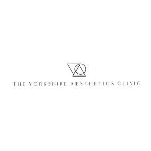
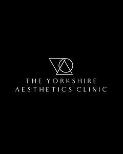

Trade Mark Journal No.2025/018 2 May 2025
UK00004185511 7 April 2025 (44)
Mark 1

Mark 2

- Class 44
- Medical care; Nursing, medical; Medical and healthcare clinics; Clinics (Medical -); Medical clinics; Medical and healthcare services; Medical services; Medical examinations; Health clinic services [medical]; Medical nursing services; Medical clinic services; Medical diagnostic services; Medical consultations; Medical treatment services; Medical information; Medical consultation; Medical testing; Medical imaging services; Provision of medical treatment; Medical services for the treatment of skin cancer; Cosmetic laser treatment of skin; Skin care salons; Dermatological services for treating skin conditions; Laser skin rejuvenation services; Medical services for treatment of the skin; Services for the care of the skin; Laser skin tightening services; Surgery (Cosmetic -); Cosmetic and plastic surgery; Cosmetic treatment for the hair; Cosmetic laser treatment of varicose veins; Injectable filler treatments for cosmetic purposes; Cosmetic treatment for the face; Cosmetic and plastic surgery clinic services; Cosmetic treatment; Cosmetic laser treatment of spider veins; Cosmetic facial and body treatment services; Cosmetic surgery services; Cosmetic treatment services for the body, face and hair; Cosmetic laser treatment for hair growth; Cosmetic treatment for the body; Plastic surgery; Liposuction services; Surgery; Beauty therapy treatments; Cellulite treatment services; Skin care salon services; Consultation services relating to skin care; Laser removal of spider veins; Laser removal of varicose veins; Cosmetic laser treatment of toenail fungus; Providing laser therapy for treating medical conditions.
Rebecca Rollett
William Haines